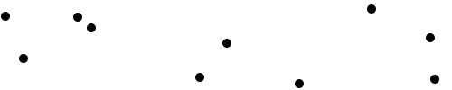
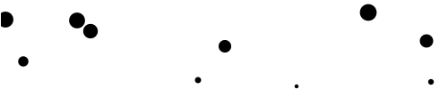
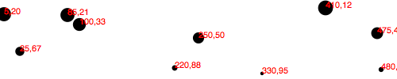

Итак, мы нарисовали только столбиковую диаграмму с набором простых данных - просто одномерный набор цифр.
Но когда у вас есть два набора данных, которые надо отобразить, вам понадобится второе изменение. Точечная диаграмма представляет собой общепринятую визуализацию, которая отображает два набора связанных значений на двух осях: горизонтальной и вертикальной, х и у.
Как вы видели в главе "Типы данных", вы практически не ограничены в выборе структуры значений, содержащейся в вашем наборе данных. Для нашей точечной диаграммы, я собираюсь использовать массив массивов. Основной массив будет содержать по одному элементу для каждой "точки". Каждая из этих "точек" будет представлена другим массивом, который хранит два значения: один для х, второй для y.
var dataset = [
[5, 20], [480, 90], [250, 50], [100, 33], [330, 95],
[410, 12], [475, 44], [25, 67], [85, 21], [220, 88]
];
Помните, [] означает массив, соответственно, вложенные квадратные скобки [[]] означают массив внутри массива. Мы отделяем элементы массива запятыми, поэтому массив, содержащий три других массива будет выглядеть приблизительно так: [[],[],[]].
Мы можем переписать наш набор данных по-другому, для большей наглядности:
var dataset = [
[ 5, 20 ],
[ 480, 90 ],
[ 250, 50 ],
[ 100, 33 ],
[ 330, 95 ],
[ 410, 12 ],
[ 475, 44 ],
[ 25, 67 ],
[ 85, 21 ],
[ 220, 88 ]
];
Теперь мы видим, что каждой из 10 строк будет соответствовать одна точка в нашей визуализации. Например, в строке [5, 20], мы будем использовать 5 как координату х, а 20 - как у.
Давайте перенесем большую часть кода из реализации нашей столбиковой диаграммы, в том числе кусок кода, который создает SVG-элемент:
//Create SVG element
var svg = d3.select("body")
.append("svg")
.attr("width", w)
.attr("height", h);
Вместо создания прямоугольников, мы будем создавать по кругу для каждого значения в наборе данных:
svg.selectAll("circle")
.data(dataset)
.enter()
.append("circle")
Также, теперь мы будем указывать и атрибуты, соответствующие кругу(cx, cy, r), а не прямоугольнику:
.attr("cx", function(d) {
return d[0];
})
.attr("cy", function(d) {
return d[1];
})
.attr("r", 5);

Страница с результатом выполнения кода.
Заметьте, как мы получаем доступ к значениям данных, и используем их для атрибутов круга cx и cy. При использовании function(d), D3 автоматически представляет текущее значение в аргументе функции с именем d. Таким образом, текущее значение представляет маленький массив в нашем большом наборе данных.
Когда d является массивом значений(а не единичным значением, например, 3.14159), для доступа к его значениям необходимо использовать квадратные скобки. Следовательно, вместо того, чтобы писать return d, мы пишем return d[0] и return d[1], и, соответственно, возвращаем первое и второе значения массива.
Например, в нашей первой точке набора данных [5, 20], первое значение(индекс массива 0) равен 5, второе значение(индекс массива 1) равно 20. Таким образом:
d[0] returns 5 d[1] returns 20
Кстати, если вам когда-нибудь понадобится получить доступ к любому значению в большом наборе данных(без использования D3), вы можете сделать это также, с использованием квадратных скобок:
dataset[5] returns [410, 12]
Для быстрого доступа к значению вложенного массива сперва указывается индекс основного массива, потом указывается индекс массива, где хранится непосредственное значение:
dataset[5][1] returns 12
Не верите мне? Взгляните по-другому на точечную диаграму, откройте JavaScript-консоль, и введите сперва dataset[5], а потом dataset[5][1], и увидите, что случится.
Возможно, вы захотите, чтобы ваши круги имели разные размеры, чтобы, например, радиус круга зависел от y. Тогда можно попробовать такой код:
.attr("r", function(d) {
return Math.sqrt(h - d[1]);
});

Полученный результат не является ни полезным, ни красивым, но он показывает, как вы можете использовать d с квадратными скобками, и как увязать значение данных с радиусом рисуемого круга.
Давайте пометим наши точки на диаграмме с помощью элементов text. Я адаптирую код для создания меток для столбиковой диаграммы, который начинается так:
svg.selectAll("text")
.data(dataset)
.enter()
.append("text")
Этот код ищет все text-элементы в SVG(которых пока нет), а потом добавляет новые текстовые элементы для каждого значения из набора данных. Используйте метод text() для задания текста для каждого элемента text:
.text(function(d) {
return d[0] + "," + d[1];
})
Немного сумбурно, но потерпите. И снова, используем function(d) для получения доступа к каждому значению набора данных. Далее, с использованием этой функции, мы используем d[0] и d[1] для получения значений массива, описывающего точку.
Символ "+", который в конкретном случае поставлен перед строкой ",", используется для объединения строк. Так эта строка кода делает: берет значения из d[0] и d[1], объединяет их в строку, в которой посередине будет находиться ",". В итоге, результат долен выглядеть примерно так: "5,20" или "25,67".
Дальше мы должны указать, где текст должен быть расположен. Это делается путем задания атрибутов текста x и y. Для этого мы будем использовать значения d[0] и d[1], их же мы используем для указания центра окружности:
.attr("x", function(d) {
return d[0];
})
.attr("y", function(d) {
return d[1];
})
И в конце добавляем несколько стилей для шрифта:
.attr("font-family", "sans-serif")
.attr("font-size", "11px")
.attr("fill", "red");

Здесь представлен результат рабочего кода.
Я надеюсь, что некоторые основные концепции, заложенные в ядро D3, вам понятны: загрузка данных, создание новых элементов, использование данных для указания атрибутов созданных элементов.
Тем не менее, изображение выше едва ли тянет на то, чтобы называться визуализацией данных. Точечную диаграмму сложно воспринимать, а код не так уж и гибко использует данные. Честно говоря, мы еще не превзошли мастер диаграмм от Excel.
Не беспокойтесь: D3 куда круче мастера диаграмм от Excel(не говоря уже о Clippy), но для того, чтобы генерировать блестящие интерактивные диаграммы, наш навык использования D3 должен быть на совершенно ином уровне. Для более гибкого использования наших данных мы поговорим о масштабировании в D3. Чтобы наша точечная диаграмма была более наглядна, мы научимся строить оси и указывать метки на них. Следующим шагом, который мы сделаем для создания по-настоящему интерактивых диаграмм, будет умение обновлять данные на лету.